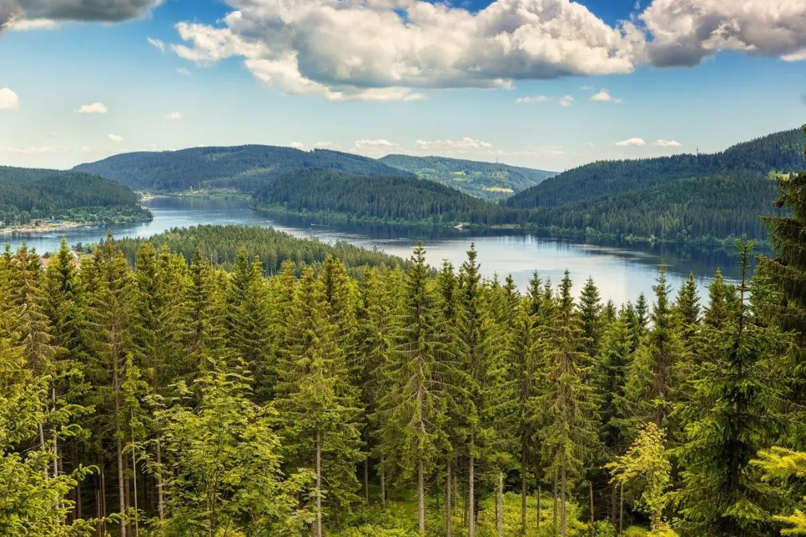

O relevo da Alemanha é bastante diversificado e se divide em três grandes zonas: a Planície do Norte, o Planalto Central e os Alpes Bávaros no sul. Essa estrutura cria uma transição natural entre áreas planas de baixa altitude e grandes formações montanhosas.
A Alemanha tem clima temperado, com quatro estações bem definidas. No verão, as médias ficam entre 20°C e 30°C, com dias longos. No inverno, o clima fica frio e úmido, com médias de 0°C a 5°C e possibilidade de temperaturas negativas e neve, especialmente no sul do país.
A vegetação da Alemanha é predominantemente florestal, ocupando cerca de um terço do país, caracterizada por florestas mistas, de coníferas e caducifólias (faias e carvalhos). Situada na zona temperada, a paisagem varia de bosques densos no sul e áreas montanhosas a charnecas e formações de turfa no norte.

A população atual da Alemanha é de aproximadamente 83,5 milhões de pessoas. O país é o mais populoso da União Europeia, concentrando cerca de 80 cidades com mais de 100.000 habitantes e destacando-se por sua alta densidade demográfica.
A Alemanha está localizada no coração da Europa Central. É o país com o maior número de vizinhos no continente, limitando-se com nove nações e banhada pelos mares do Norte e Báltico. Sua posição estratégica a torna um ponto central de conexão política e econômica na Europa.